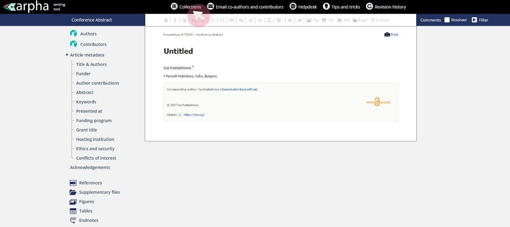
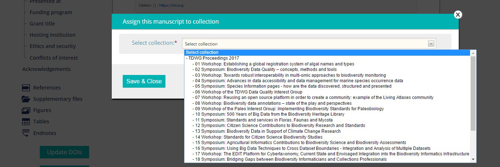
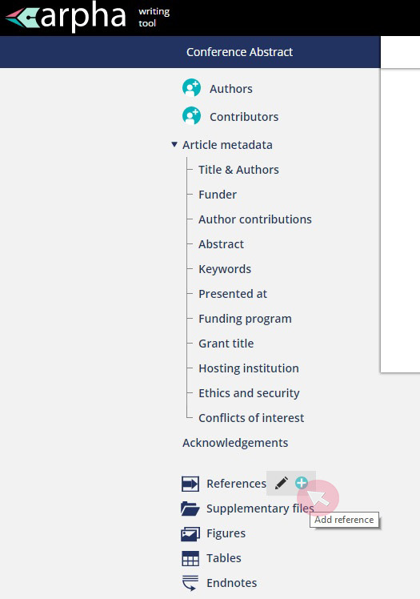
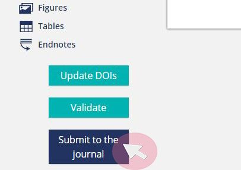
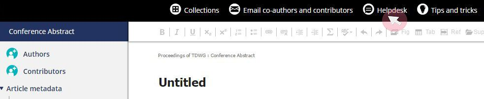

Instructions for Submitting Abstracts
Submissions of abstracts is now closed
- Log in at http://tdwgproceedings.pensoft.net.
- Click the “Start a Conference Abstract” button to directly open an abstract manuscript.
- Click “Collections” on the top navigation bar. This is where you select the track (symposium, workshop, poster session, or computer demonstration) to which you are submitting. If you are an invited speaker for a symposium or workshop, select it from the options in the list. If you are submitting an oral presentation for consideration by a symposium or workshop that is open to submissions, select it from the options in the list. Note that this does not guarantee that your submission will be accepted by the organizers. See the conference program for symposia and workshop descriptions, and information on which tracks are open to unsolicited submissions. If you would like to deliver an oral presentation but none of the symposia or workshops match your topic, choose “Other Oral Presentations”. You can also select “Poster” or “Computer demonstration”.  
- Fill in your abstract's metadata by hovering over a category,
and then clicking on the pencil icon. The only mandatory fields
are “Title”, “Abstract”, “Keywords”, and “Presenting Author”.
Titles should have all major words begin with a capital letter;
please do not use all uppercase in your title. The submitting
author and affiliation are taken from the profile of the
logged-in user. More authors can be added by clicking the icon
beside “Authors” in the left-side navigation panel. The corresponding author
and the ordering of authors can be changed from the same menu. The
corresponding author must be available to communicate about the
abstract until final acceptance for publication. The presenting
author is the person who will be delivering the
talk/demonstration at the TDWG meeting in October.

- Submissions are limited to 600 words written in English and must address the conference themes or other topics in biodiversity informatics. Note that this is not a venue for reporting the results of research in your discipline. Please write for a general audience with no unexplained jargon. The first mention of acronyms or abbreviations in the abstract or figure/table legends must be spelled out (exceptions include GIS, HTML, TDWG, WWW, URL, XML, JPG, TIF, TIFF, PDF). Please proofread your submission carefully.
- You may add references (not included in word count), one figure, and one table by clicking on the appropriate icon. You may also upload supplementary materials associated with the abstract.
- Click “Validate.” This will ensure that mandatory fields are filled in and the abstract is assigned to a collection. Be sure to finish this step, even if you and your co-authors are not finished writing or reviewing your submission.
- When you are ready to submit your abstract, click “Submit for
Technical Review.” This will send the manuscript to the track organizers, who will review it for relevance to the track.
You will recieve a confirmation email.
The deadline for completing this step is
July 14July 21. - The organizers may accept or reject your submission, or may send feedback requesting changes, or suggest submission to a different track.
- Once the abstract is accepted, the ‘Submit to the journal’ button becomes visible in the ARPHA Writing Tool. You need to click this button and go through a checklist of submission steps. The fourth and final step asks you to assign categories to your submission; this step is optional. When the submission process is finalised, the abstract goes directly to production and publication, a DOI is assigned, and the abstract cannot be revised further. Please complete this step by August 15, to enable us to prepare the program.
- If at any time you need further assistance, you can send an email to the journal’s technical staff via the system. Click “Helpdesk” on the top navigation bar to open a new window with an email form for you to fill in.